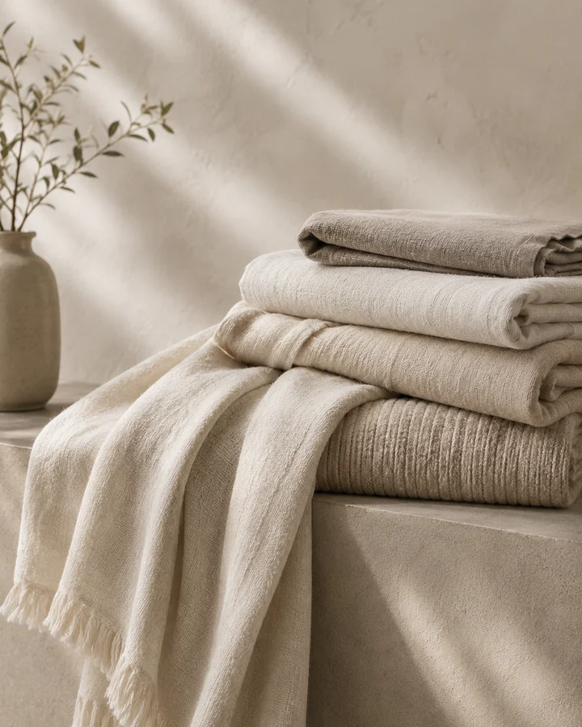
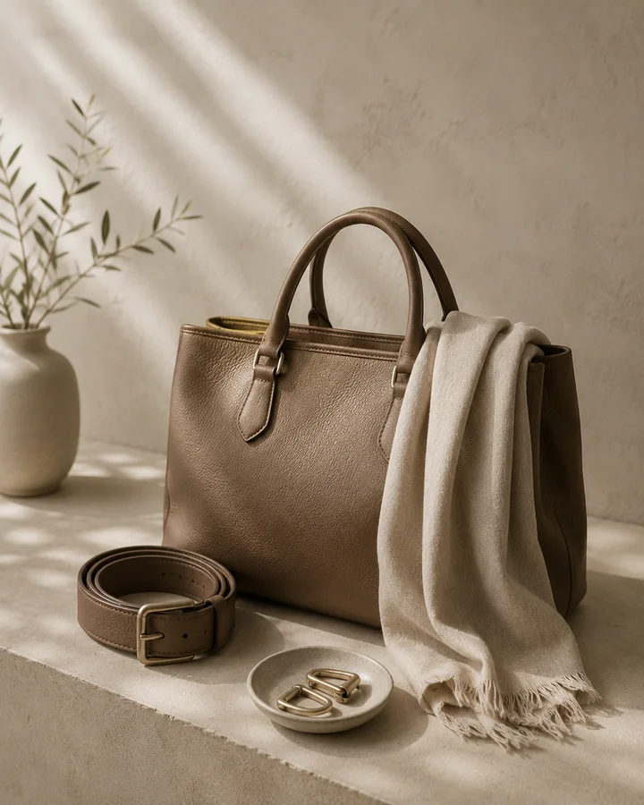
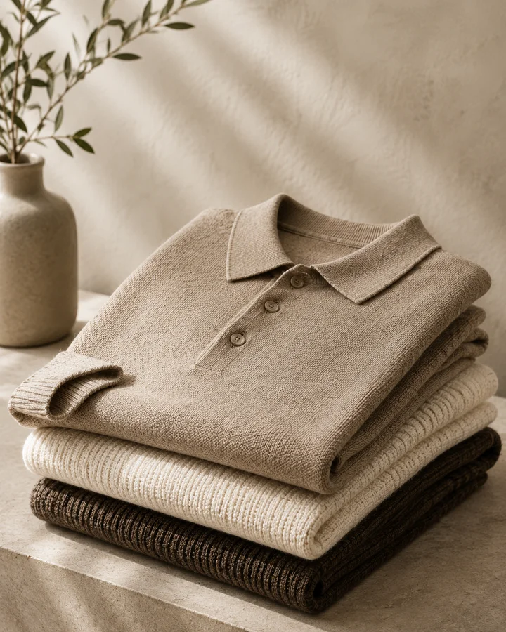
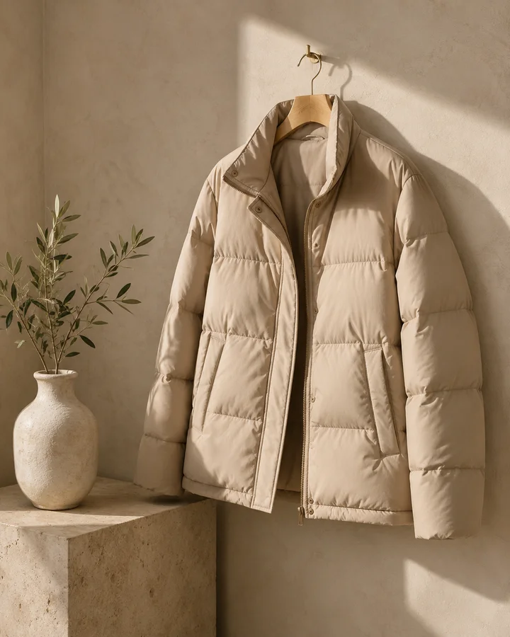
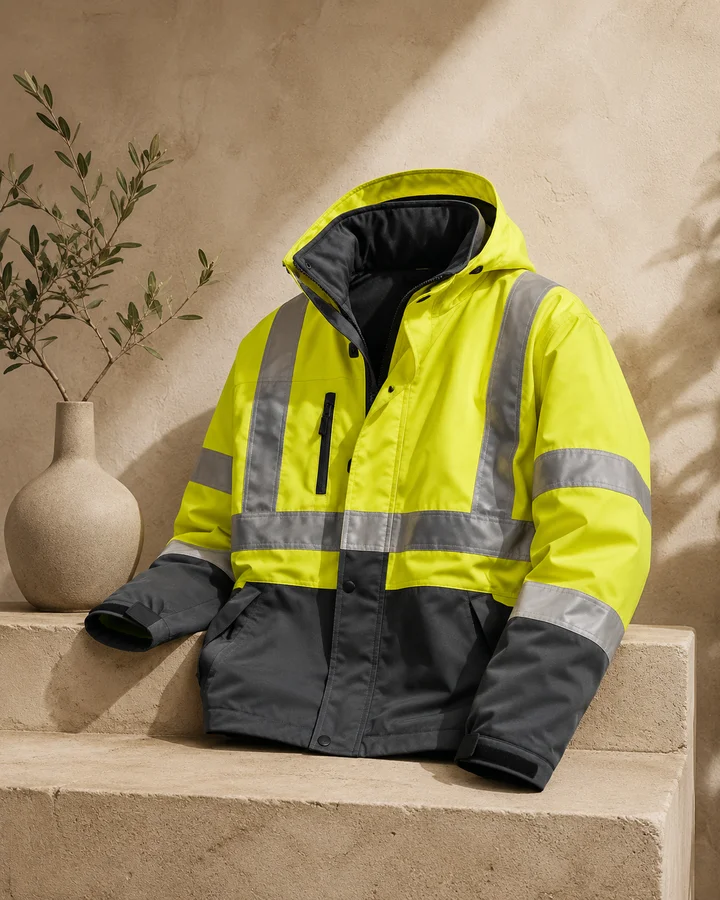
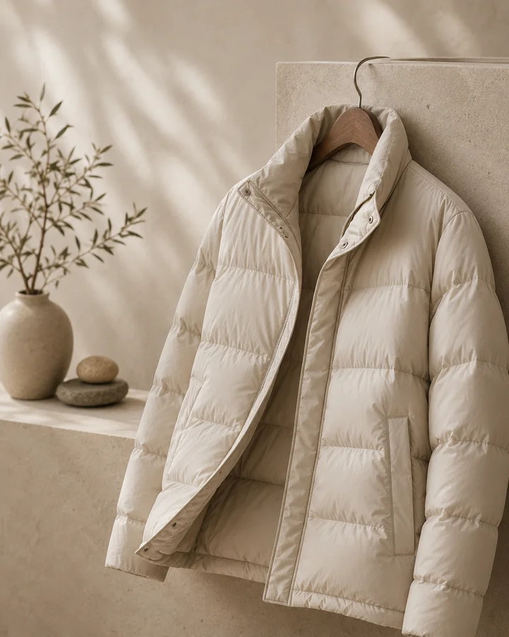

Capabilities
Category depth for modern apparel programs.
Explore product categories supported through development, sourcing, manufacturing coordination and quality follow-up.
 ✦
✦Woven
Shirts, tops, dresses, trousers and structured woven garments.
 ✦
✦Knitwear
T-shirts, polos, fleece, jersey and comfortwear.
 ✦
✦Denim
Jeans, jackets, shirts and denim programs with wash support.
 ✦
✦Outerwear
Jackets, coats, puffers and seasonal layers.
 ✦
✦Activewear
Performance wear, sportwear and movement-focused product lines.
 ✦
✦Kidswear
Comfortable, safe and quality-focused children’s apparel.

✦Home Textiles
Towels, linens, blankets and soft textile products.

✦Accessories
Trims, labels, bags, scarves and apparel add-ons.

✦Sweaters
Flat knit, ribbed and seasonal sweater programs.

✦T-Shirts
Basic, premium and custom-developed T-shirt programs.

✦Workwear
Durable uniforms, safety apparel and functional work clothing.

✦Jackets
Casual jackets, quilted pieces and technical outerwear.